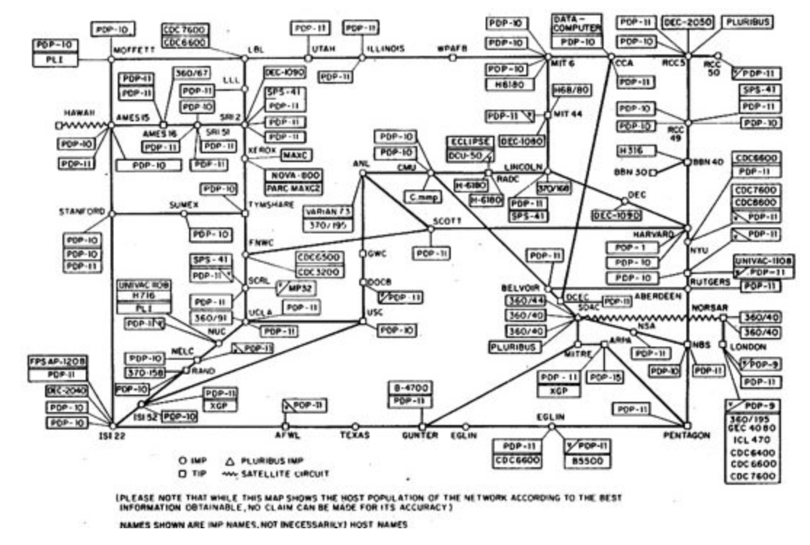
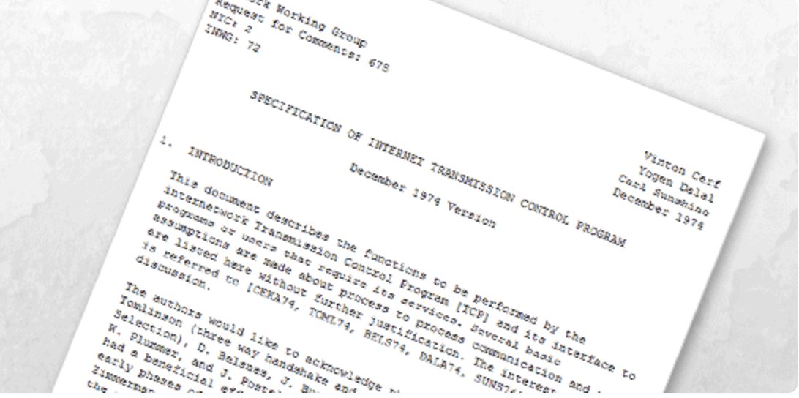
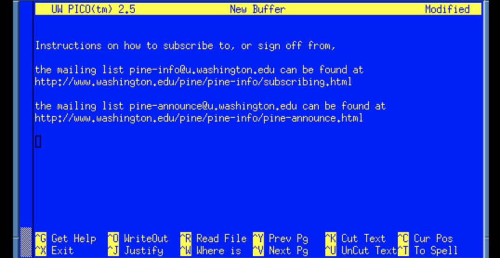
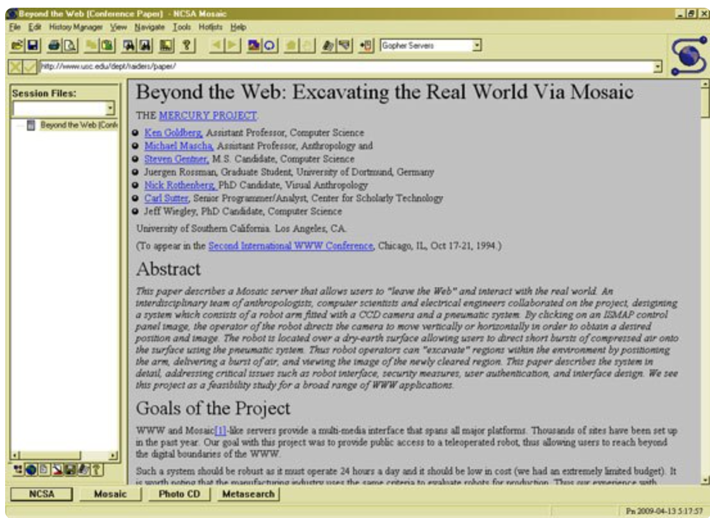
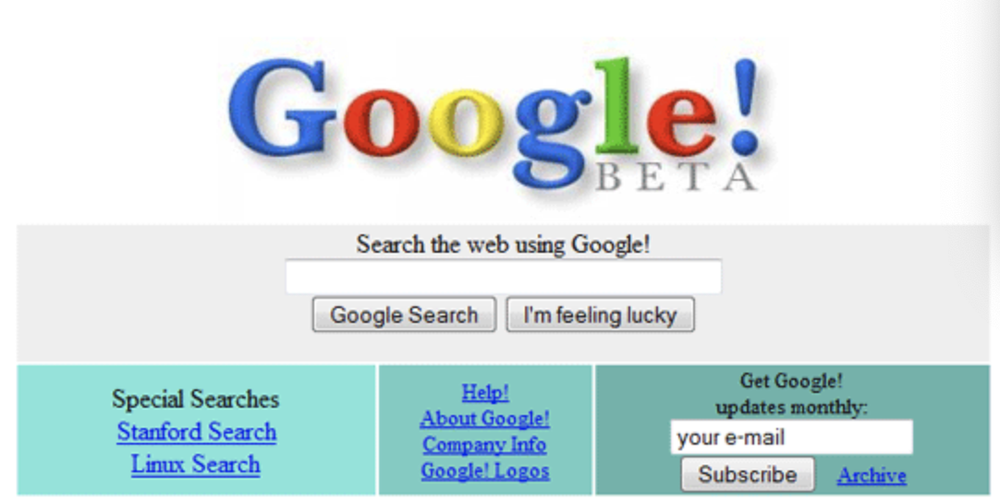
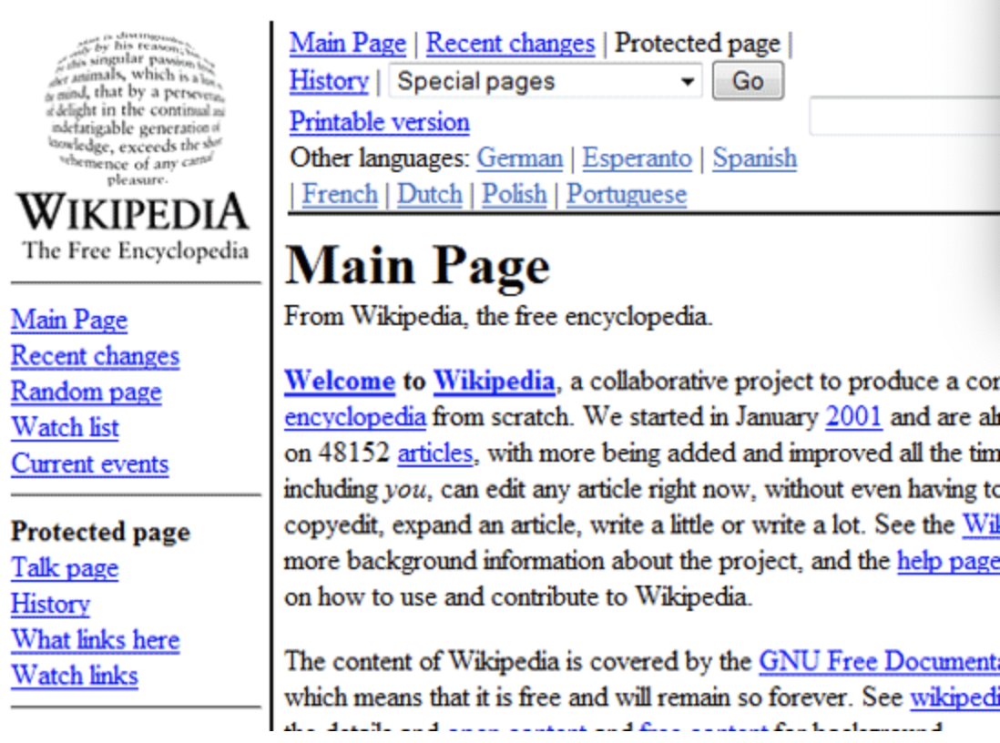
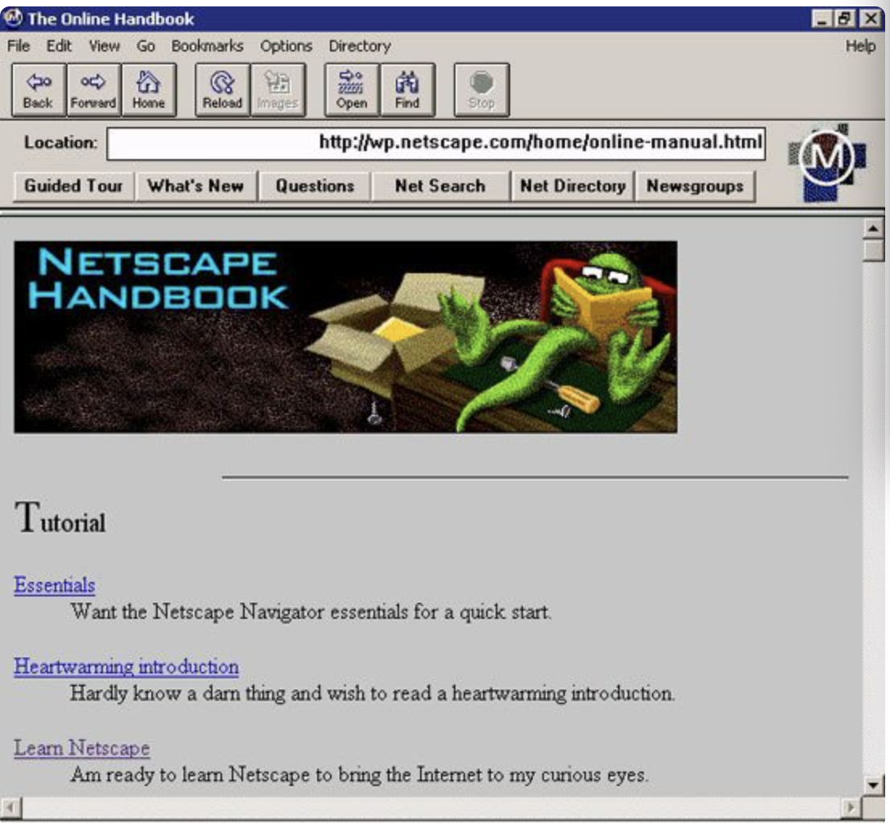
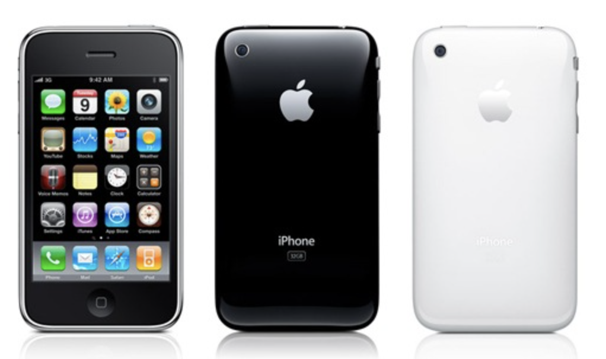
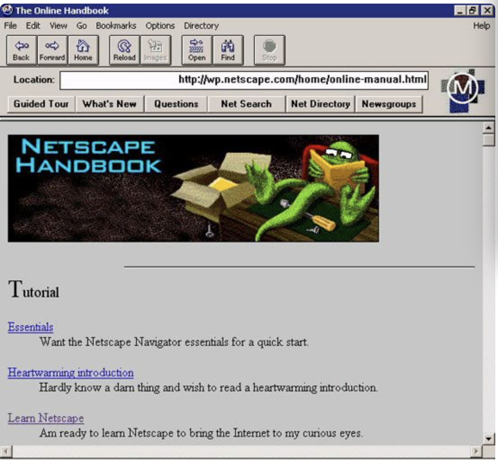
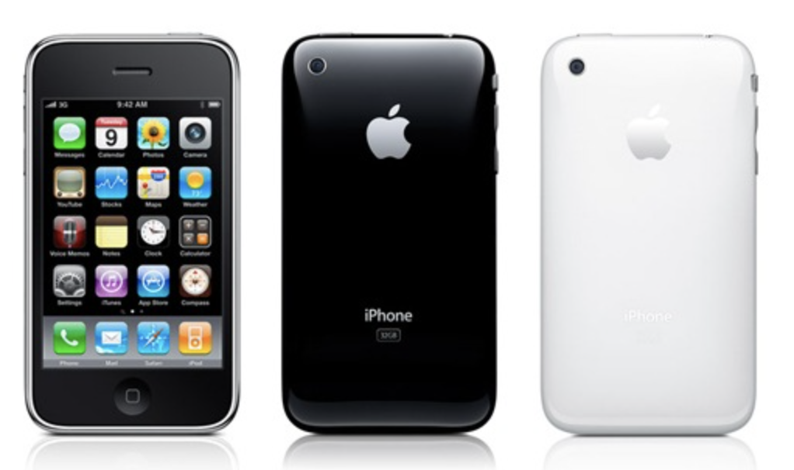

Arpanet was the first real network to run on packet switching technology (new at the time). On October 29, 1969, computers at Stanford and UCLA connected for the first time. In effect, they were the first hosts on what would one day become the Internet. The first message sent across the network was supposed to be “Login”, but reportedly, the link between the two colleges crashed on the letter “g”.
1969
One of the most impressive developments of 1971 was the start of Project Gutenberg. Project Gutenberg, for those unfamiliar with the site, is a global effort to make books and documents in the public domain available electronically–for free–in a variety of eBook and electronic formats.
1971
1974 was a breakthrough year. A proposal was published to link Arpa-like networks together into a so-called “inter-network”, which would have no central control and would work around a transmission control protocol (which eventually became TCP/IP).
1974
1977 was a big year for the development of the Internet as we know it today. It’s the year the first PC modem, developed by Dennis Hayes and Dale Heatherington, was introduced and initially sold to computer hobbyists.
1977
Also in 1988, Internet Relay Chat (IRC) was first deployed, paving the way for real-time chat and the instant messaging programs we use today.
1988
When Apple pulled out of the AppleLink program in 1989, the project was renamed and America Online was born. AOL, still in existence today, later on made the Internet popular amongst the average internet users.
1989
The first widely downloaded Internet browser, Mosaic, was released in 1993. While Mosaic wasn’t the first web browser, it is considered the first browser to make the Internet easily accessible to non-techies.
1993
In 1996, HoTMaiL (the capitalized letters are an homage to HTML), the first webmail service, was launched.
1996
In 1998, the first major news story to be broken online was the Bill Clinton/Monica Lewinsky scandal (also referred to as “Monicagate” among other nicknames), which was posted on The Drudge Report after Newsweek killed the story.
1998
With the dotcom collapse still going strong, Wikipedia launched in 2001, one of the websites that paved the way for collective web content generation/social media.
1996
Hulu was first launched in 2007, a joint venture between ABC, NBC, and Fox to make popular TV shows available to watch online.
1996







 


